Kaldığı yer
Cinsiyet Ailesiyle Yurtta Evde Sum
Kadın 26 17 3 46
Erkek 29 13 8 50
Sum 55 30 11 96Frekans Dağılımları ve Merkezi Eğilim
İstatistik I · 2. Ders · 8 Ekim 2026
Prof. Dr. Hüseyin Taştan
Yıldız Teknik Üniversitesi, İktisat Bölümü
Bu derste
- Kategorik değişkenler: frekans tablosu, çubuk çizimi, çapraz tablo
- Sayısal değişkenler: dal-yaprak çizimi, frekans tablosunu elle kurmak, histogram, poligon ve ogive, dağılımın biçimi, zaman serisi grafikleri
- Merkezi eğilim ölçüleri: ortalama, ağırlıklı ve geometrik ortalama, medyan, mod
- Sıra istatistikleri, kartiller ve yüzdelikler
Kategorik değişkenler
Kategorik değişken: frekans ve göreli frekans
400 haneye sağlık merkezine erişimin ne kadar kolay olduğu sorulmuş:
| Cevap | Frekans | Göreli frekans |
|---|---|---|
| Çok kolay | 63 | 0.158 |
| Kolay | 196 | 0.490 |
| Orta | 47 | 0.118 |
| Zor | 70 | 0.175 |
| Çok zor | 24 | 0.060 |
| Toplam | 400 | 1.000 |
- Frekansların toplamı , göreli frekansların toplamı 1: hesabı denetlemenin yolu
- Göreli frekans farklı büyüklükteki grupları karşılaştırmayı sağlar: “70 hane” değil, “hanelerin %17.5’i”
Çubuk çizimi ve pasta grafiği
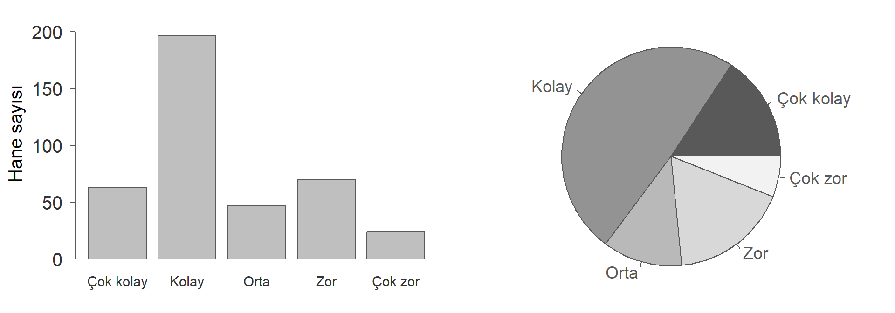
- Sıralı değişkende çubuklar doğal sırayla dizilir (çok kolaydan çok zora); nominal değişkende sıklığa göre sıralamak okumayı kolaylaştırır
- Pastada dilimlerin açılarını gözle karşılaştırmak zordur: “Zor” mu büyük, “Çok kolay” mı?
İki kategorik değişken: çapraz tablo
Öğrenci anketinde cinsiyet ile öğrencinin kaldığı yer birlikte sorulmuştu.
- Her hücre iki değişkenin birlikte gözlendiği öğrenci sayısıdır: yurtta kalan kadın öğrenci sayısı 17
- Kenar toplamları tek değişkenli frekans tablolarını verir. Bunlara marjinal dağılım denir
- Toplam 96, çünkü cinsiyetini belirtmeyen bir öğrenci tabloya girmiyor
Satır mı, sütun mu? İkili çubuk çizimi
Satır yüzdesi, her cinsiyetin kendi içinde nasıl dağıldığını verir:
Kaldığı yer
Cinsiyet Ailesiyle Yurtta Evde
Kadın 56.5 37.0 6.5
Erkek 58.0 26.0 16.0Sütun yüzdesi ise her yerleşim biçiminin cinsiyet bileşimini verir:
Kaldığı yer
Cinsiyet Ailesiyle Yurtta Evde
Kadın 47.3 56.7 27.3
Erkek 52.7 43.3 72.7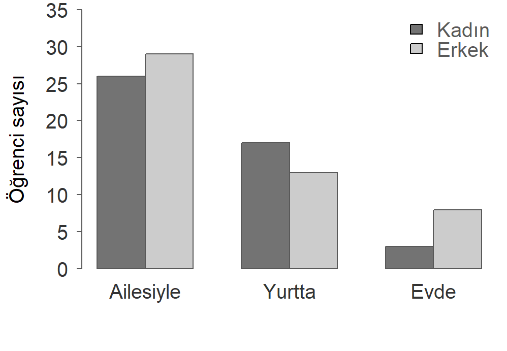
Çubuklar yan yana çizilirse gruplar doğrudan karşılaştırılır. Üst üste (yığılmış) çizilirse toplamlar öne çıkar, karşılaştırma zorlaşır.
Sayısal değişkenler
Dal-yaprak çizimi
Kağıt kalemle hızlıca çizilen ve değerleri kaybetmeyen bir dağılım resmi.
13 öğrencinin sınav notu:
48, 55, 87, 58, 63, 75, 95, 68, 75, 80, 60, 52, 66
- Her sayıyı ikiye ayır. Onlar basamağı dal, birler basamağı yaprak. 75’in dalı 7, yaprağı 5.
- Dalları küçükten büyüğe alt alta yaz, yanlarına dikey bir çizgi çek.
- Her gözlemin yaprağını kendi dalının satırına küçükten büyüğe yaz.
4 | 8 5 | 2 5 8 6 | 0 3 6 8 7 | 5 5 8 | 0 7 9 | 5
Okuma: 7 | 5 = 75
Her satırdaki yaprak sayısı o daldaki gözlem sayısıdır. Satırların uzunluğu dağılımın biçimini gösterir. Yan yatırılmış bir histogram gibidir, ama her not hâlâ okunabilir.
Dal-yaprak: R çıktısını okumak
81 ilde mutluluk endeksi, stem() çıktısı:
The decimal point is 1 digit(s) to the right of the |
4 | 2
4 | 69
5 | 0012222333344
5 | 56677777778888889999
6 | 0000011111123334444
6 | 55555666788
7 | 00011122344
7 | 5668- En düşük ve en yüksek endeks yaklaşık kaçtır?
- Her dal neden iki satırda yazılmış?
- En kalabalık satır hangisi, kaç il içeriyor?
Yanıtlar: (a) 42 ve 78. (b) Birinci satır 0-4, ikinci satır 5-9 yapraklarını taşır. Satır sayısını R veriye bakarak kendisi seçer. (c) 5 | 5…9 satırı, 20 il. Bu illerin endeksi yaklaşık 55 ile 59 arasında.
“The decimal point is 1 digit(s) to the right of the |”: ondalık nokta çizginin bir basamak sağında, yani 4 | 2 = 42. Değerler tam sayıya yuvarlanmıştır (41.98 → 42).
Dal-yaprak çiziminden frekans tablosuna
20 öğrencinin sınav notu, dal-yaprak çizimiyle:
4 | 3 7 5 | 2 5 8 6 | 1 3 4 6 8 9 7 | 1 3 4 7 9 8 | 2 5 8 9 | 3
- Her satırın yapraklarını sayalım: 2, 3, 6, 5, 3, 1. Bunlar 40’lı, 50’li, …, 90’lı notların sayısıdır.
- Bu sayılar genişliği 10 olan sınıfların frekanslarıdır. Dal-yaprak çizimi hem frekansları hem de değerlerin kendisini gösterir.
- Gözlem sayısı yüzlerle ölçülünce satırlar çok uzar. O zaman değerleri bırakıp yalnız frekansları tutarız. Bu, frekans tablosudur.
Sayısal veri: frekans tablosunu elle kurmak
20 öğrencinin sınav notu:
43, 47, 52, 55, 58, 61, 63, 64, 66, 68, 69, 71, 73, 74, 77, 79, 82, 85, 88, 93
Kağıt kalemle dört adım.
- Sırala. Veriyi küçükten büyüğe diz. En küçük ve en büyük değeri, dolayısıyla veri aralığını böylece görürsün. Yukarıdaki notlar sıralı verilmiştir, ham veri ise genelde karışık gelir.
- Sınırları belirle. En küçük 43, en büyük 93. Genişliği 10 olan sınıflar 40’tan 100’e kadar veriyi kapsar.
- Çetele tut. Her gözlemi ait olduğu sınıfa bir çizgi olarak yaz. Beşinci çizgiyi önceki dördünün üstünden çapraz çek, beşerli gruplar kolay sayılır. Listeyi bir kez baştan sona gez.
- Sütunları doldur. Frekans, göreli frekans ve birikimli frekans.
Çetele ve frekans tablosu
| Sınıf | Çetele | |
|---|---|---|
| || | 2 | |
| ||| | 3 | |
| ||||| | 6 | |
| |||| | 5 | |
| ||| | 3 | |
| | | 1 |
| Sınıf | Göreli | Birikimli | Birikimli % | |
|---|---|---|---|---|
| 2 | 0.10 | 2 | %10 | |
| 3 | 0.15 | 5 | %25 | |
| 6 | 0.30 | 11 | %55 | |
| 5 | 0.25 | 16 | %80 | |
| 3 | 0.15 | 19 | %95 | |
| 1 | 0.05 | 20 | %100 |
- : 60 dahil, 70 hariç. Tam 70 alan öğrenci bir sonraki sınıfa girer
- Sınıflar hem kapsayıcı (her gözlem bir sınıfa girer) hem ayrık (hiçbir gözlem iki sınıfa girmez) olmalıdır
- Denetim: frekanslar toplamı , göreli frekanslar toplamı 1, son birikimli değer 20
Histogramı elle çizmek
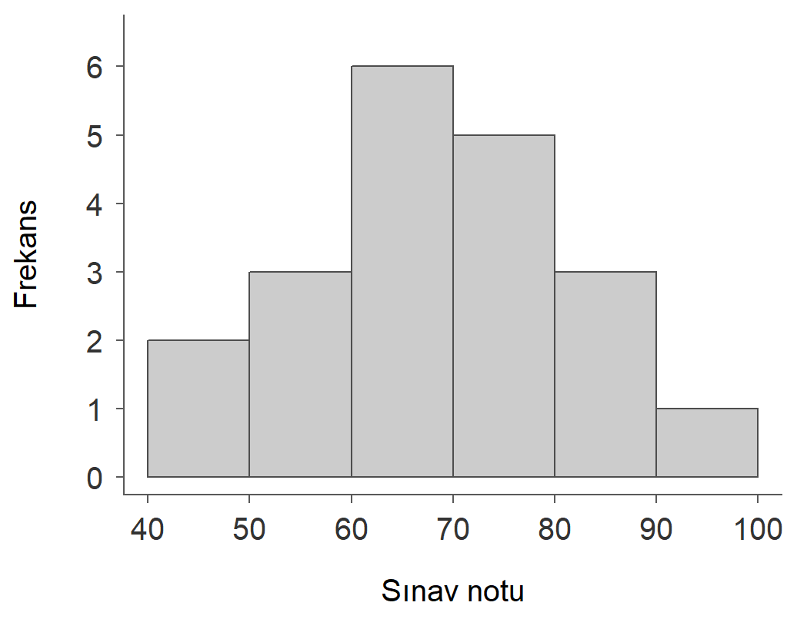
Tablodaki her satır bir dikdörtgendir.
- Taban: sınıfın sınırları, yani 10 puanlık aralık
- Yükseklik: o sınıfın frekansı
- Dikdörtgenler bitişik çizilir, aralarında boşluk bırakılmaz
Çubuk çiziminden farkı budur. Kategorilerin arası boştur, sayı doğrusunun arası değil.
Yükseklik ne olmalı: frekans mı, yoğunluk mu?
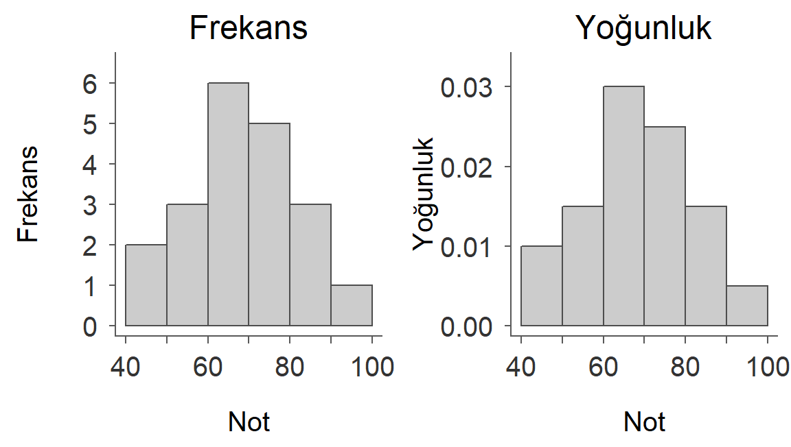
- Biçim aynı, değişen yalnız dikey eksenin ölçeği
- için:
- Yoğunlukla çizilen histogramda toplam alan 1’dir
Sınıf genişlikleri eşit değilse yükseklik olarak frekans kullanılamaz, yoğunluk kullanmak gerekir.
Histogram

Elle yaptığımız işi R tek satırda yapar. 81 ilde mutluluk endeksi, genişliği 5 olan sınıflar.
- Her dikdörtgenin yüksekliği o sınıfa düşen il sayısıdır
- Çubuk çiziminden farkı: dikdörtgenler bitişiktir, çünkü sınıflar sayı doğrusunda birbirini izler
- Neyi okuruz: merkez nerede, ne kadar yayılmış, simetrik mi, kaç tepe var?
Sınıf sayısı görüntüyü değiştirir
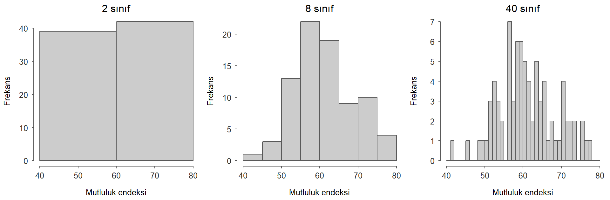
- Çok az sınıf: dağılımın biçimi kaybolur. Çok fazla sınıf: boşluklar ve rassal inişler çıkışlar.
- Bir başlangıç önerisi, Sturges kuralı: sınıf sayısı , yukarı yuvarlanır. 81 il için , yani 8 sınıf.
Sınıf genişliğini değiştirin Deneyin
Kırmızı noktalar illerin tek tek değerleri. Sınıflar biçiminde: alt sınır dahil, üst sınır hariç.
Frekans poligonu
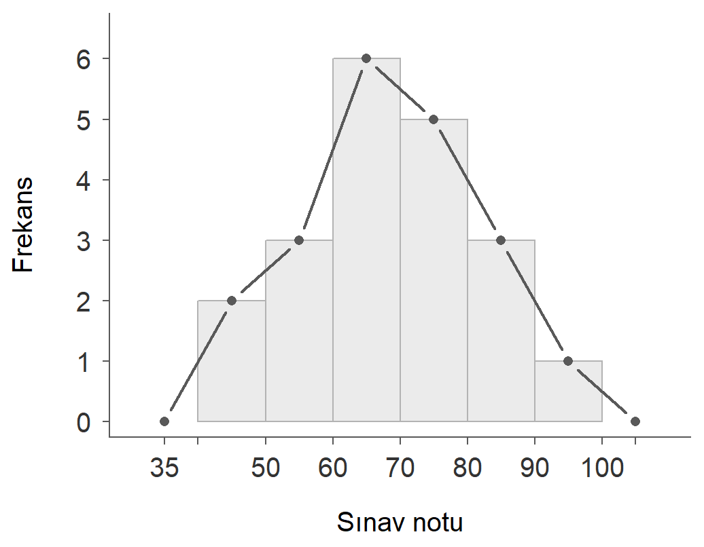
Aynı tablodan çizilen ikinci grafik.
- Frekanslar sınıfın orta noktasına işaretlenir: 45, 55, 65, …
- Noktalar düz çizgilerle birleştirilir
- İki uçta birer boş sınıf eklenerek çizgi eksene indirilir
Poligonun kolaylığı, iki grubun dağılımını aynı eksende karşılaştırabilmektir. Çizgiler birbirinin altını kapatmaz.
Birikimli frekans eğrisi (ogive)
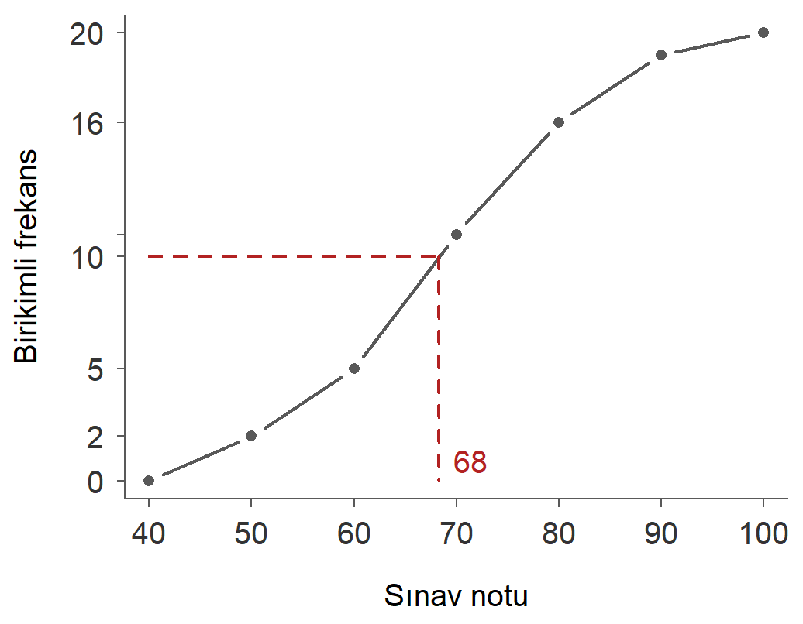
Birikimli frekanslar sınıfın üst sınırına işaretlenir.
- “60 puandan az alan 5 öğrenci var”
- Eğri hiç azalmaz, son noktada ’ye ulaşır
Ters yönde de okunur. Öğrencilerin yarısı (10 kişi) hangi notun altında? Dikey eksende 10 seviyesinden yatay çizilir, eğriyi kestiği yerden aşağı inilir, yaklaşık 68 okunur.
Sınıfları daraltırsak
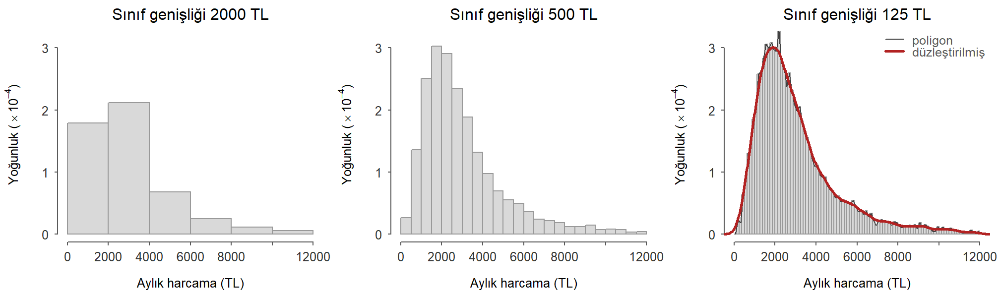
20.000 hanenin aylık harcaması. Dikey eksen üç panelde de aynı, değişen yalnız sınıf genişliği.
- Sınıflar daraldıkça dağılımın biçimi daha ayrıntılı görünür
- Orta noktaları birleştiren poligon, dar sınıflarda düzgün bir eğriye yaklaşır
- Kırmızı eğri poligonun düzleştirilmiş hâlidir. İkisi de aynı veriden gelir
Dağılımın biçimi: simetri ve çarpıklık
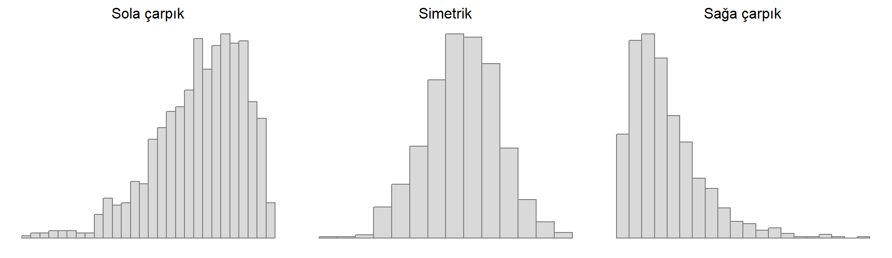
- Sola çarpık (uzun kuyruk solda): kolay bir sınavda notlar
- Simetrik (iki kuyruk benzer): tek cinsiyet içinde yetişkin boyu
- Sağa çarpık (uzun kuyruk sağda): gelir, harcama, ev fiyatları
Gerçek veri: hane geliri sağa çarpık
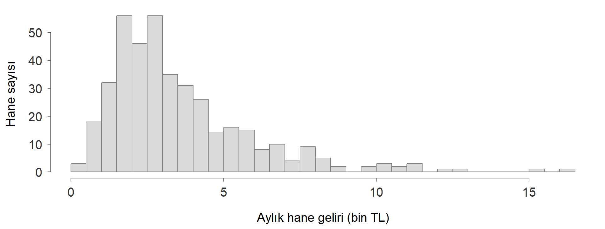
Hanelerin çoğu düşük ve orta gelir düzeyinde toplanmış; az sayıda hanenin geliri çok yüksek ve sağ kuyruğu uzatıyor.
Tepe sayısı: iki grup bir arada

Soldaki histogramda neden iki tepe var?
Sıra önemliyse: zaman serisi grafiği
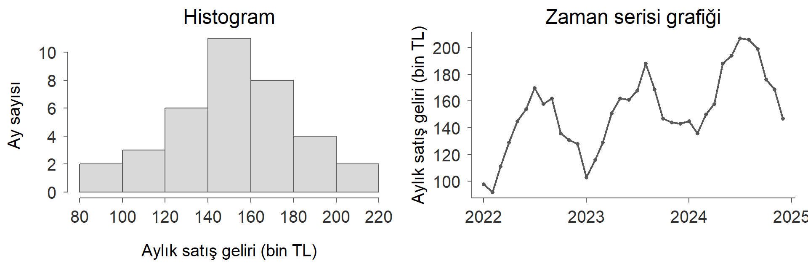
Bir kafenin 36 aylık satış geliri, iki grafikte aynı 36 sayı.
- Histogram gözlemlerin sırasını görmez. Ayları karıştırsak histogram değişmez.
- Zaman serisinde sıra bilginin kendisidir. Yatay eksende zaman, dikey eksende ölçüm yer alır ve noktalar birleştirilir.
Zaman serisi grafiğinde neye bakarız?
- Eğilim (trend). Seri uzun dönemde yükseliyor mu, düşüyor mu, yoksa bir düzey etrafında mı dalgalanıyor?
- Mevsimsellik. Yıl içinde düzenli tekrarlayan bir örüntü var mı? Perakende satışlar bayram ve yılbaşında, turizm gelirleri yaz aylarında yükselir.
- Oynaklık ve kırılmalar. Dalgalanmanın şiddeti zamanla değişiyor mu? Serinin düzeyinde ani bir sıçrama ya da düşüş var mı? Finansal getirilerde oynaklık zamanla değişir, rejim ve politika değişiklikleri yapısal kırılmalara yol açabilir.
Bir kafenin aylık satışları
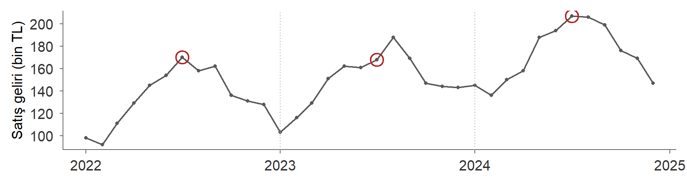
- Eğilim: aylık ortalama 2022’de 134.5, 2024’te 172.9 bin TL.
- Mevsimsellik: halkalı temmuzlar her yıl üstte, ocak ve şubat dipte. 2023’te tepe ağustosta, rastlantı tepeyi bir ay kaydırabilir.
- Oynaklık: dalgalanmanın şiddeti üç yıl boyunca benzer.
2024 temmuzunda 207 bin TL satış yapıldı. Bu olağanüstü bir ay mı?
Günlük veri: haftalık mevsimsellik ve bir kampanya
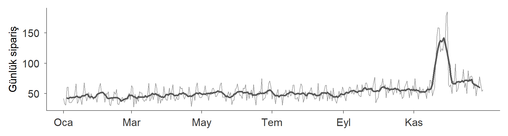
Bir e-ticaret şirketinin günlük sipariş sayısı (gri) ve 7 günlük hareketli ortalama (siyah).
- Eğilim: günlük ortalama ocakta 44, ekimde 57 sipariş.
- Haftalık mevsimsellik: küçük dişler. Pazar ortalaması 68, salı ortalaması 47 sipariş. Hareketli ortalama bu dişleri düzleştirir.
- Kırılma: kasım sonundaki indirim kampanyası seride belirgin bir sıçrama yaratır, kampanya bitince seri eğilimine döner.
Merkezi eğilim
Toplam işlemcisi
Örnek:
Kurallar ( sabit)
Ortalama
Anakütle ortalaması
Örneklem ortalaması
- Formül aynı, yorum farklı: sabit bir sayıdır, örneklemden örnekleme değişir.
- Bütün gözlemlere aynı ağırlığı () verir.
Rassal seçilen 10 öğrencinin not ortalaması (GPA): 3.2, 1.8, 2.5, 2.8, 3.7, 3.1, 2.9, 2.0, 3.5, 3.9. kaçtır?
Ağırlıklı ortalama
Gözlemlerin önemi farklıysa her gözlem bir ağırlıkla () çarpılır:
Bir öğrenci kredileri 3, 5 ve 2 olan derslerden 80, 60 ve 90 almış. Aritmetik ortalama ve kredi ağırlıklı ortalama kaçtır?
- Aritmetik ortalama:
- Ağırlıklı ortalama:
Kredisi en yüksek dersteki not düşük olduğu için ağırlıklı ortalama daha düşük. Bütün ağırlıklar eşitse ikisi aynıdır.
Büyüme oranlarının ortalaması
100 TL’lik bir hisse senedi birinci yıl %50 değer kazanıyor, ikinci yıl %50 değer kaybediyor. Ortalama yıllık getiri %0 mıdır? İki yıl sonra senedin değeri kaç TL’dir?
- Birinci yıl sonunda TL, ikinci yıl sonunda TL
- Aritmetik ortalama diyor, oysa yatırımcı parasının dörtte birini kaybetti
Oranlar toplanarak değil çarpılarak birikir. Bu yüzden ortalamaları da çarpımdan hesaplanmalıdır.
Geometrik ortalama
Pozitif değerler için
çarpım işlemcisidir, ’nın çarpmadaki karşılığı.
Büyüme ve getiri oranları için
Oranlar negatif olabildiği için 1 eklenmiş hâlleri çarpılır.
Hisse senedi örneğinde Senet yılda ortalama %13.4 değer kaybetmiş. Denetim: TL.
Bir yatırımın beş yılı
1000 TL ile alınan bir finansal varlığın yıl sonu değerleri:
| Yıl | Değer (TL) | Getiri |
|---|---|---|
| 0 | 1000.0 | |
| 1 | 1200.0 | %20 |
| 2 | 1260.0 | %5 |
| 3 | 1134.0 | −%10 |
| 4 | 1304.1 | %15 |
| 5 | 1238.9 | −%5 |
Aritmetik ortalama
Geometrik ortalama
Hangisi doğru? Her iki oranla 1000 TL’yi beş yıl büyütelim.
Hangi oran gerçek değere götürür?
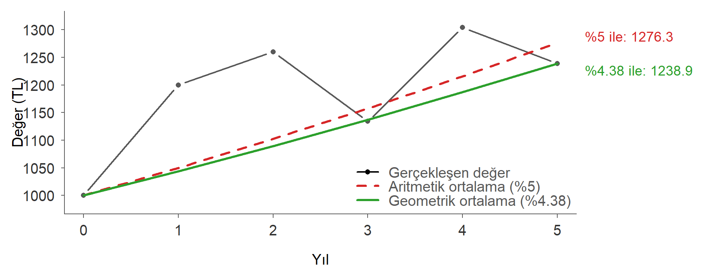
- Geometrik ortalamayla büyüyen yol beşinci yılda gerçekleşen değere, 1238.9 TL’ye tam olarak ulaşır.
- Aritmetik ortalama getiriyi olduğundan yüksek gösterir ve 1276.3 TL’ye götürür.
Oynaklık farkı büyütür Deneyin
Getiri tek yıllarda ortalama + oynaklık, çift yıllarda ortalama − oynaklık. Siyah gerçekleşen değer, kırmızı kesikli aritmetik ortalamayla büyüme, yeşil geometrik ortalamayla büyüme.
Medyan
Veri sıralandığında tam ortadaki değer.
- tek: . sıradaki değer
- çift: . ve . sıradaki değerlerin ortalaması
GPA verisi sıralanınca ():
| Sıra | 1 | 2 | 3 | 4 | 5 | 6 | 7 | 8 | 9 | 10 |
|---|---|---|---|---|---|---|---|---|---|---|
| GPA | 1.8 | 2.0 | 2.5 | 2.8 | 2.9 | 3.1 | 3.2 | 3.5 | 3.7 | 3.9 |
Medyan . Veriye 2.6 eklenirse () medyan 6. sıradaki değer, yani 2.9 olur.
Mod
En sık tekrar eden değer. Hiç olmayabilir, birden fazla olabilir.
Bir ürünü değerlendiren 12 müşterinin puanı (1-5):
4, 5, 3, 4, 4, 2, 5, 4, 3, 4, 5, 1
| Puan | 1 | 2 | 3 | 4 | 5 |
|---|---|---|---|---|---|
| Frekans | 1 | 1 | 2 | 5 | 3 |
Mod = 4
- Nominal değişkenler için anlamlı tek merkez ölçüsü: en sık görülen bölge, meslek, kan grubu
- Sürekli verilerde (gelir) değerler nadiren tekrar eder; mod yerine histogramın en yüksek sınıfına bakılır
Tahmin edin
On öğrencinin notları: Ortalama 71.5, medyan 72.5.
Sınava girmeyen üç öğrenciye 0 yazılırsa ortalama kaç olur? Medyan kaç olur?
Tahmininizi yazın, sonra bir sonraki slaytta sınayın.
Uç değerler: ortalama ve medyan Deneyin
Mahalleye bir milyarder taşınırsa Deneyin
Dokuz hanenin aylık geliri (bin TL): 15, 18, 20, 20, 22, 25, 28, 30, 35. Onuncu hane taşınıyor.
Çarpık dağılımda ortalama ve medyan
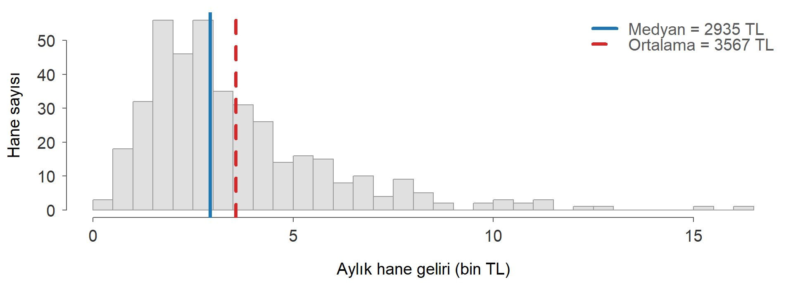
Sağa çarpık dağılımda uzun sağ kuyruk ortalamayı yukarı çeker: ortalama > medyan. Gelir istatistiklerinde bu yüzden medyan da raporlanır.
Hangisini ne zaman kullanmalı?
| Veri | Uygun ölçü | Neden |
|---|---|---|
| Simetrik, uç değer yok | Ortalama | Bütün gözlemleri kullanır |
| Çarpık ya da uç değerli (gelir, harcama) | Medyan | Uç değerlere dirençlidir |
| Sıralı nitel (memnuniyet, eğitim düzeyi) | Medyan, mod | Kategoriler arası mesafe eşit değildir |
| Nominal (meslek, il) | Mod | Sıralama ve toplama anlamsızdır |
| Büyüme ve getiri oranları | Geometrik ortalama | Oranlar çarpılarak birikir |
Kodlanmış kategorilerin ortalaması anlamlı değildir
“Çok kolay = 1, …, Çok zor = 5” diye kodlanmış bir değişkenin ortalaması 2.7 çıkabilir; ama bu sayı hiçbir cevaba karşılık gelmez.
Sıra istatistikleri ve kantiller
Sıra istatistikleri
Veri küçükten büyüğe sıralanır:
- : ’ıncı sıra istatistiği
- en küçük değer (minimum), en büyük değer (maksimum)
- Parantezli indis sırayı, parantezsiz indis gözlemin veri kümesindeki yerini gösterir
GPA verisinde (ilk kaydedilen öğrenci), ama (en düşük not).
Kartiller ve yüzdelikler
Gözlemlerin belirli bir oranının altında kaldığı değerler:
| Ölçü | Altında kalan oran |
|---|---|
| Birinci kartil | %25 |
| Medyan | %50 |
| Üçüncü kartil | %75 |
| ’inci yüzdelik | % |
Kitaptaki yöntem: oranına karşılık gelen değer ’inci sıradaki değerdir. Bu sayı tamsayı değilse iki komşu sıra istatistiği arasında doğrusal interpolasyon yapılır.
Birlikte hesaplayalım
Sıralı veri (): 10, 20, 30, 40, 50, 60, 70, 80, 90, 100
, medyan ve kaçtır?
:
:
:
Hane gelirinin yüzdelikleri: R çıktısını okumak
10% 25% 50% 75% 90%
1359 1934 2935 4458 6628 Bu çıktıya göre:
- Hanelerin yüzde kaçının aylık geliri 1934 TL’nin altındadır?
- En yüksek gelirli yüzde 10’luk dilime girmek için bir hanenin en az ne kadar geliri olmalıdır?
- Hanelerin ortadaki yarısı hangi gelir aralığındadır?
Yanıtlar: (a) %25 · (b) yaklaşık 6628 TL · (c) 1934 TL ile 4458 TL arası
R’ın quantile() fonksiyonunda kitaptaki yöntem type = 6 seçeneğidir; varsayılan yöntem (type = 7) küçük örneklemlerde biraz farklı sonuç verir.
Kendinizi sınayın
- Bir ildeki hanelerin aylık kira ödemelerinin histogramı sağa çarpık. Ortalama mı medyan mı daha büyüktür?
- Bir sınıfta 30 öğrencinin memnuniyeti 1-5 ölçeğinde soruluyor. Hangi merkez ölçüleri kullanılabilir?
- Sıralı 15 gözlemde birinci kartil kaçıncı sıradaki değerdir?
- Bir sınava giren 200 öğrencinin notunun 90’ıncı yüzdeliği 78. Bu ne anlama gelir?
- Bir şirketin cirosu bir yıl %10 artıyor, ertesi yıl %10 azalıyor. İki yılın ortalama büyüme oranı kaçtır?
Gelecek hafta
Değişkenlik ölçüleri, kutu çizimi, iki değişken arasındaki ilişki
- Okuyun: Bölüm 5 · Sayısal Özet Ölçüleri (değişkenlik ölçüleri), Bölüm 6 · İki Değişken Arasındaki İlişki
- Bu haftanın örneklerini önce kâğıt kalemle, sonra kitaptaki çözümlü alıştırmalarla çalışın
İstatistik I · YTÜ İktisat Bölümü